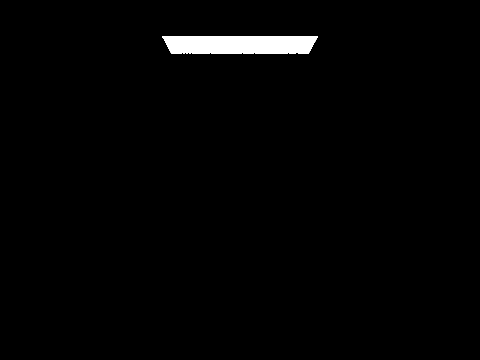

In this homework, we implemented ray tracing. First, we dealt with generating rays from our camera's origin and averaging samples to get our pixel values for color.
Then, we dealt with intersections between rays and primitives such as triangles and circles using formulas given in discussion.
Afterward, we implemented a bounding volume hierarchy tree where we sped up the ray tracing process by avoiding intersection calculations with primitives
when those primitives were further along in the tree than an inner node whose bounding box the ray did not intersect with.
Next, we implemented direct illumination and global illumination to deal with how bright different parts of our output image should be.
Finally, we added adaptive sampling so that we could end sampling early when the pixel converged so that we can save our program from doing unnecessary sampling.
Part 1: Ray Generation and Scene Intersection
For this part, we first determined the intersection of a ray that starts at the origin with the virtual camera sensor by transforming from image space to camera space (interpolating the x and y values).
Then, we take ns_aa random samples from a given pixel and update the sample buffer with the average result of
calling est_radiance_global_illumination on each of the samples.
To deal with ray-triangle intersections, we used the Moller-Trumbore algorithm after taking
using the origin and direction of the ray and points of the triangle to determine various intermediate vectors that the algorithm takes as input. After
using the algorithm, we get values for time and 2 barycentric coordinaters. If the time value is non-negative,
and the barycentric coordinates (including the 3rd which is 1 minus the other two) are all between 0 and 1 inclusive, then we have a valid intersection and we populate
the intersection struct with the time we calculated, the normal (using barycentric interpolation), the primitive, and the bsdf.
To deal with ray-circle intersections, we use the equation for a circle given a center and radius and the equation for a ray to calculate
the intersection time/s using the quadratic formula. If there are non-imaginary solutions where t is non-negative, then we have a valid intersection
and can populate the intersection struct similarly to with the triangle.
The idea behind the Moller-Trumbore algorithm is that we can represent our intersection variables (t, b_1, b_2) as a vector
in a linear matrix equation (Matrix * vector = vector), then we can calculate the intersection vector using Cramer's rule given
the matrix and the resultant vector (which are represented by matrix - the reverse of the ray direction and the vectors that represent displacement between p1-p0 (vector 1) and p2-p0 (vector 2)), and vector - the intersection point)
Below are examples of shading for a few small .dae files (namely the cow, cube, and spheres files).
Cow
Cube
Spheres
Part 2: Bounding Volume Hierarchy
For this part of the project, we impelmented a bounding volume hierarchy. To do this, we created a tree
that would takes in an iterator of primtiives and divide them roughly in 2 each time until we end recursion when we only
have less than or equal to max_leaf_size primitives left in the iterator.
The heuristic that we used to split the primitives roughly in half was as such:
we measured the absolute difference in number of primitives that would be in 2 split nodes based on the primitive's centroid's x, y, and z values
of the primitives compared to the overall average x, y, z of the centroids.
(one category if centroid is less than or equal to average, other if greater than).
We would choose the axis to divide by x,y, or z based on which one would have the lowest absolute difference as calculated earlier.
Then we would put primitives with centroid value on that axis less it on the left and primitives equal to or more than on the right.
To deal with intersections, we first considered whether the ray would hit the bounding box at a time that made sense (needs to be within the bounding box
in all 3 axes at a non-negative time). We can recursively iterate through the BVH tree only considering nodes
whose bounding box the ray intersects with until we arrive at leaf nodes and only have to consider the primitives inside the leaf nodes that we arrived at.
With BVH, it takes 0.5557 seconds to render CBLucy.
With BVH it takes 0.0979 seconds to render the dragon.
Below are the outputs for complicated files
Lucy
Cube
Without BVH, it takes 129.2017 seconds to render Max Planck. With BVH
it takes 0.3746 seconds. Without BVH it takes 911.7099 seconds to render blob.
With BVH it takes 0.6967 seconds to render the blob.
Looking at these results, it is clear that BVH significantly speeds up acceleration.
Our answer to why this happens is because thanks to the BVH tree, we do not have to consider
intersections between rays and tree nodes that contain primitives whose bounding boxes the ray does not even hit.
Thus, we can only consider a subsection of the primitives and save a significant amount of time in models
with thousands of different primitives.
Below are the outputs from the code with BVH for the files discussed in the preceding paragraph.
Max Planck
Blob
Part 3: Direct Illumination
To implement direct illumination, first we edit the f function in DiffuseBSDF to return the reflectance over pi as given in Discussion 7.
Then, we add zero bounce reflection to get light from the light sources themselves such as the ceiling area light in the rabbit image.
Next, we do direct lighting with uniform hemisphere sampling where we trace back rays from the intersection with light taken
from random samples of a uniform hemisphere.
Then, we do a similar implementation but instead of sampling from a uniform hemisphere we use importance sampling to emphasize
light according to how "important" it is given as by the sampling function.
Below are some images of both implementations of direct lighting.
Bunny with Uniform Hemisphere Sampling
Bunny with Importance Sampling
Gems with Uniform Hemisphere Sampling
Gems with Importance Sampling
Below is the bunny image rendered with importance sampling (1 sample per pixel), with given number of rays.
As shown clearly below, the noise levels of the shadows gets lower and lower as the number of rays increases which makes sense
because we are getting a more accurate average in our calculation when we have more light rays with the same number of samples.
1 Light Ray
4 Light Rays
16 Light Rays
64 Light Rays
Comparing direct lighting with uniform hemisphere sampling to importance sampling, it becomes clear
that importance sampling helps smooth out the graininess of the images that we outputted
with hemisphere sampling. The result of the bunny for example has almost no visible spots for the importance sampling
version but many for the hemisphere sampling version. The result of the spheres only has a shading gradient visible on the spheres of the importance sampling version.
Part 4: Global Illumination
Our indirect lighting function is inspired by how our direct lighting function calculates radiance. One of our implementations of the direct lighting function uses the irradiances of known light sources in the scene, the bidirectional scattering distribution function associated with the intersected primitive/material, and a selected number for the amount of samples to collect from a light source to calculate the Monte Carlo estimate of the reflection equation at a specific intersection point in world space for a particular outgoing ray. Given an intersection point and outgoing ray, our indirect lighting function first directly calls that direct lighting function to obtain the estimated radiance generated from direct lighting for that intersection point. From there, the function then produces a ray originating at the given intersection point with a random possible direction and traces that ray through world space. If the ray intersects another object, that other intersection point and ray (inverted to now be outgoing from that point) will be the arguments to a recursive call to the indirect lighting function. The result of that recursive call is the estimated radiance stemming from that other intersection point, and it is used to calculate the incoming irradiance from that randomly determined direction. The irradiance is then used to generate an estimated radiance through the Monte Carlo estimate of the reflection equation at the current function call's intersection point for the current function call's outgoing ray, adding it to the total outgoing radiance sum and returning it. To summarize, the indirect lighting function generates the radiance estimate contributed by direct lighting and by a randomly determined incoming direction, with the latter being assisted with a recursive call. Obviously, we do not intend for the recursion to go on infinitely, so we set a max ray depth to put a limit. The tail of the recursion will simply return the estimated radiance of direct lighting to its intersection point and outgoing ray only. To avoid bias, we implement a Russian roulette feature that stops the recursion early for a given termination probability and returns the estimated radiance from direct lighting only. For nonterminating recursions, the radiance estimated by the further recursion call is normalized by the continuation probability. Another thing to note is that sometimes, the randomly determined incoming direction has no intersection in its path, which also stops the recursion early.
Global Illumination Rendering
Spheres
Dragon (Max Ray Depth = 2)
Blob
Bench
Direct and Indirect Illumination
Only Direct Illumination
Only Indirect Illumination
For the scene with only direct illumination, the objects and walls are very flat in their colors, only possessing and reflecting shades of one color. In addition to that, the shadows are intense, with some parts being literally black instead of a shade, like the roof or the middle part of the sphere's shadows. For the scene with only indirect illumination, the objects and walls possess a mixture of colors resulting from the colors of other objects in the environment. For example, both spheres and the floor have a tinge of blue and red due to the light reflected from the blue and red walls. Although being directly underneath a light source, the top of the spheres is the darkest due to the camera only collecting indirect light reflections, not direct light reflections.
Mth Bounce of Light Rendering of CBbunny (Unaccumulated Bounces)
m=0, o=0
m=1, o=0
m=2, o=0
m=3, o=0
m=4, o=0
m=5, o=0
Within the images above, you can see the illumination of the bunny and the scene becoming darker and darker. This is because we are increasing the number of rays used in calculating indirect illumination, going further back along a light ray's path that consists of numerous reflections, and collecting and returning only the estimated radiance from the tail end. Because we are only collecting the tail-end radiance, it's clear to see that the radiance is less and less with depth because the energy is absorbed more and more with each intersection/reflection. Despite the dimness, the collection of indirect radiance allows us to collect additional light information about the environment, specifically how other objects' presences affect the light that gets reflected and cast on each other before being reflected into the camera. Because of this, we can see the red and blue light from the walls that is reflected onto the bunny. While rasterization may be able to calculate how light looks directly cast onto objects, it is ultimately unable to effectively display the additional nuance of indirect lighting, making its quality less realistic than the effects of ray tracing.
Accumulated Bounces Rendering of CBbunny

m=0, o=1
m=1, o=1
m=2, o=1
m=3, o=1
m=4, o=1
m=5, o=1
When comparing the rendered views of accumulated and unaccumulated bounce, you can see that past depth 1, the views of the accumulated are brighter and possess more light sources, displaying the light from the ceiling. As the depth increases, the brightness increases for the views of the accumulated while the brightness decreases for the views of the unaccumulated. As mentioned before, the views rendered from the unaccumulated bounce return the estimated radiance generated only from the tail-end ray or the very furthest ray, which means that as depth increases, more bounces occur, resulting in more energy being absorbed before getting reflected into the camera. This is different from the views rendered from the accumulated because, in addition to the estimated radiance generated from the tail-end ray, at each intersection, the estimated radiance as a result of direct illumination at that insection point is being considered too, leading to more radiance being accumulated at each bounce.
Russian Roulette Rendering of CBbunny
m=0, Termination Probability=0.3
m=1, Termination Probability=0.3
m=2, Termination Probability=0.3
m=3, Termination Probability=0.3
m=4, Termination Probability=0.3
m=100, Termination Probability=0.3
Thankfully, due to the existence of a termination probability, the render times of these specifications are dramatically reduced as depths are occasionally not fully realized on some samples due to terminating early. Despite having some radiances being collected samples that terminated early, the quality of images in depicting lighting remains pristine because the contributions from lights from further depths would have had a minuscule effect anyway due to having their energies absorbed at each intersection/bounce.
Various Sample-per-Pixel Rates Rendering of CBspheres
s=1, l=4
s=2, l=4
s=4, l=4
s=8, l=4
s=16, l=4
s=64, l=4
s=1024, l=4
As the samples-per-pixel rate increases, the noise and graininess reduce, producing a clearer rendered picture. This can be seen when comparing the image rendered from 1 sample-per-pixel rate with the image rendered from 1024 sample-per-pixel rate. The latter is a crystal clear picture, while the former possesses a lot of artifacts throughout the picture. The tradeoff for this clarity and increase in image quality is that the time it takes to render increases as more calculations need to be had with more samples.
Part 5: Adaptive Sampling
The issue of noise is apparent when we form realistic images by estimating the radiance coming at each pixel by path-tracing rays in order to get the Monte Carlo estimate of the reflection equation. The remedy to this is by increasing the sample-per-pixel rate, but this creates new problems like increasing the time it takes to render images. A way to optimize for this issue is through adaptive sampling. Instead of increasing the sample-per-pixel rate across the board and applying it to all pixels, we would adapt the sampling rate to the pixel's convergence status. When it is to a sufficient degree, there is no longer a need to continue sampling. This adaptation maintains a certain level of image quality while also optimizing for rendering time.
Our implementation modifies our ray tracing function at the pixel level. Instead of conducting ray tracing samples for a fixed number of samples, our implementation performs a check every time a batch number of samples is reached. This check involves calculating the mean and variance of the illuminance from all samples taken across all batches and using that to calculate the current number of samples' confidence interval. We then use that confidence interval to check if it lies below a given tolerance threshold around the mean. If it does, that means that the illumination from the collected samples has reached a tolerable level of convergence, so we no longer need to collect further samples. We would stop collecting samples at the current pixel if the check rings true, and we would update the normalizer for the Monte Carlo estimator to accommodate for the shortened number of samples.